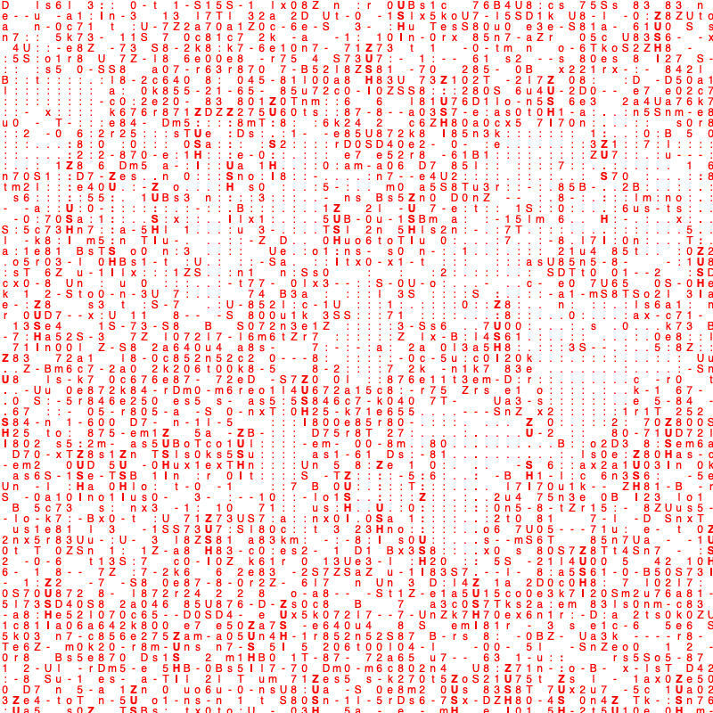

{
"tasteProfile" : {
"musicalIdentity": "Your musical world is deeply immersed in **atmospheric and introspective sounds**, with dream pop, slowcore, and shoegaze forming the core of your listening.
Artists like Grouperfirst recorded listen: "Poison Tree", "Inca Ore / Grouper", 2021-02-04T19:33:58Z, AE 2.49.100.9. listened to 16687 times.and Slowdivefirst recorded listen: "Alison", "Souvlaki", 2021-03-18T21:59:03Z at 86.99.204.253. listened to 6314 times. saw live in fall 2024. are central to your taste, creating a rich tapestry of layered soundscapes and ethereal vocals.
You frequently return to the **melancholic beauty** of artists such as Adrianne Lenkerfirst recorded listen: "anything", "songs", 2021-12-10T13:07:50Z at 86.98.177.102. listened to 5460 times. saw live in fall 2024, with Sophie. , often exploring the more lo-fi and bedroom pop corners of the indie spectrum.
There's a clear appreciation for **vocalists who convey raw emotion**, whether it's the delicate folk of Vashti Bunyanfirst recorded listen: "I'd Like To Walk Around In Your Mind", "Just Another Diamond Day", 2020-09-08T16:28:38Z at 2.51.215.35. listened to 3563 times.,
the powerful indie rock of Mitskifirst recorded listen: "First Love / Late Spring", "Bury Me At Makeout Creek", 2020-08-27T14:41:53Z, AE 2.51.215.35. listened to 13881 times. saw live in feb 2026, with Sid.
Your listening often features a blend of **dreamy textures and emotional depth**, making artists like Cocteau Twins and Blood Orange consistent favorites.",
"podcastTaste" : "Tell us about your taste or start listening to podcasts so we can give you better recommendations.",
"audiobookTaste" : "Tell us about your taste or start listening to audiobooks so we can give you better recommendations.",
"contentRhythms"
: "Music is a **constant presence throughout your week**, particularly in the afternoons and evenings. You often turn to your preferred atmospheric and introspective genres during **weekday afternoons**, finding a consistent mood in dream pop, slowcore, and shoegaze.
This pattern extends into **Tuesday evenings and weekday late evenings**, suggesting music serves as a backdrop for winding down or focused activity . Your **Saturday afternoons** also feature these same dreamy and lo-fi indie sounds, indicating a reliable soundtrack for your weekend activities. Your listening intensity is heavy for music,listened to a total of 768,442.16 mins (that's 534 days!) on Spotify, in all time. while podcasts and audiobooks are not currently part of your regular routine.",
"artistUris" : ["spotify:artist:31uyAcnY0kjjKKIQZMKX4i", "spotify:arti4aKWmkWAKviFlyvHYPTNQYst:", "spotify:artist:0pg0Zm8FsGAYy5kdHuBnSo", "spotify:artist:2uYWxilOVlUdk4oV9DvwqK", "spotify:artist:4chuPfKtATDZvbRLExsTp2", "spotify:artist:72X6FHxaShda0XeQw3vbeF", "spotify:artist:5Wabl1lPdNOeIn0SQ5A1mp", "spotify:artist:6LEeAFiJF8OuPx747e1wxR"],
"showUris" : [ ],
"audiobookUris" : [ ]
},
"notes" : [ ]
}
